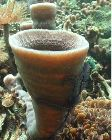
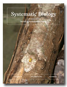

Society of Systematic Biologists
Home of Systematic Biology
Popular contentSyndicateCategories
User loginNavigationWho's onlineThere are currently 0 users and 2 guests online.
|
Job Opportunity: Lab Technician in Herp Molecular LabThe Austin Laboratory at the LSU Museum of Natural Science is seeking a candidate for a position as a LABORATORY TECHNICIAN. Experience in molecular genetic methods including DNA isolation, PCR, automated sequencing are required. Prior work in genomics and/or phylogenetics and HERPETOLOGY are highly desired. 6th Biennial meeting of the Systematics AssociationRegistration is now open for the Sixth Biennial International Conference of the Systematics Association to be held at the Royal Botanic Garden Edinburgh, 28-31 August 2007. The Biennial conferences of the Systematics Association provide a forum for systematists from different disciplines to present and discuss their research. The format will be a mixture of both open sessions and focused thematic symposia, including Floras and Faunas Serving Biodiversity Research, and Speciation. More information and registration details can be found at http://www.systass.org/biennial2007/ Taxonomic inflation: two additional causesby Yehudah L. Werner Department of Evolution, Systematics and Ecology, The Hebrew University of Jerusalem, 91904 Jerusalem, Israel (e-mail: yehudah_w@yahoo.com) The recent detailed and extensively documented review of taxonomic inflation, by Padial and De la Riva (2006) (doi:10.1080/1063515060081588), of necessity omitted two additional causes for the promotion of subspecies to species. Both causes are almost secret and of both I am only aware through personal involvement with taxonomy and, especially, taxonomists. For both it would be very difficult to collect quantitative data on the frequency of occurrence. Assistant Professor Willamette UniversityThe Department of Biology at Willamette University invites applications for a tenure-track position at the level of assistant professor for an Evolutionary Ecologist to begin August 2007. Proficiency with molecular techniques is required. Preference will be given to candidates who research whole animal level questions and whose interests complement our existing field-based strengths. Specific areas of interest include, but are not limited to, comparative morphology, population genetics, adaptation, speciation, and the evolution of species� interactions. STRI course in taxonomy and ecology of sponges
 View course flier (PDF). Registration Fee: $600 (includes room and board, STRI registration fee, etc.) (some fellowships are available). Instructors: Doctoral program at the American Museum of Natural HistoryAmericaââ?¬â?¢s first doctoral program at a museum will come from the American Museum of Natural History with its newly created Richard Gilder Graduate School. This innovative program will award a Ph.D. in comparative biology with the first class of students enrolling in fall 2008. Dr. John J. Flynn, the lead curator at the museum who recently discovered South America's oldest and best-preserved primate skull and rodent skulls with colleagues, will be Dean of the school. VERTEBRATE SYSTEMATIST/CURATOR positionVERTEBRATE SYSTEMATIST/CURATOR - UNIVERSITY OF ARIZONA Evolution 2007The annual meetings of The American Society of Naturalists (ASN) http://www.amnat.org, Society of Systematic Biologists (SSB) http://systbiol.org, and the Society for the Study of Evolution (SSE) http://www.evolutionsociety.org were held June 16-20, 2007 at the Christchurch Convention Centre, Christchurch, New Zealand. Full details on this combined meeting are available at the Evolution 2007 web site, www.evolution2007.com Multiple sequence alignment for phylogenetic purposes
55(6) December 2006 Phylogenomic Analysis of the L1 Retrotransposons in Deuterostomia DuÃ?¡san KordiÃ?¡; Nika LovÃ?¡in; Franc GubenÃ?¡ek By Roderic Page at 2007-01-13 17:59 | read more
|
Latest issue
EVOLDIRphylobabble.orgiPhyloPhyloseminarSystematics AssociationNESCentThe Genealogical World of Phylogenetic NetworksCiteULike PhylogenyEvolutionary Bioinformatics
CladisticsBMC Evolutionary Biology
Molecular Biology and Evolution |
 Follow us on Twitter
Follow us on Twitter Find us on Facebook
Find us on Facebook